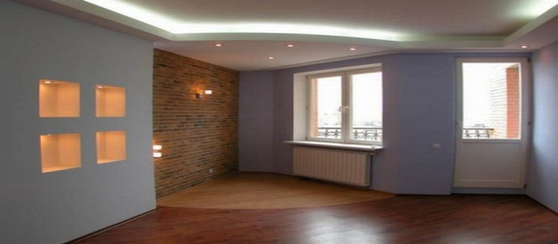

Правило нашей компании — компетентно и достойно вести бизнес!
Специально для Вас:
Бесплатно
составим смету!
Бесплатно
выезд менеджера на объект!
Бесплатно
обследование объекта и выявление дефектов!
Сезонные скидки и акции!
Поэтапная оплата!
Сантехнические работы в Севастополе
-
С приходом в дом проблем с сантехникой, все остальные бытовые проблемы уходят на второй план. Примером может служить лопнувшая труба, в результате чего будет нанесен урон не только собственнику недвижимости, но и жильцам расположенных ниже квартир. А какой дискомфорт способен причинить засор канализации! В такой ситуации, знакомой многим не понаслышке, начинают дрожать руки, и человек просто теряется, не в силах справиться собственными силами с возникшей проблемой. Вот и наступает время проведения сантехнических работ. А для того, чтобы перекрыть воду в стояке, необходим специалист. И тут на выручку приходит сантехник.
Сантехнические работы, которые мастера компании могут выполнить качественно и в срок:
- установка, замена шаровых кранов, гибкой подводки
- замена кранбукс, замена прокладок
- установка, замена сифона и обвязки
- установка, замена фильтров тонкой и грубой очистки
- установка, замена и ремонт смесителя
- установка, замена раковины, умывальника, мойдодыра, кухонной мойки
- установка, замена унитаза, биде, сливного бачка, запорной арматуры
- установка, замена ванны, джакузи, душевой кабины,
- подключение, установка стиральных и посудомоечных машин
- подключение, установка проточных и накопительных водонагревателей
- установка и перенос полотенцесушителей, замена полотенцесушителей
- установка и перенос радиаторов отопления, замена батарей
- устранение засоров канализации и других сантехнических приборов